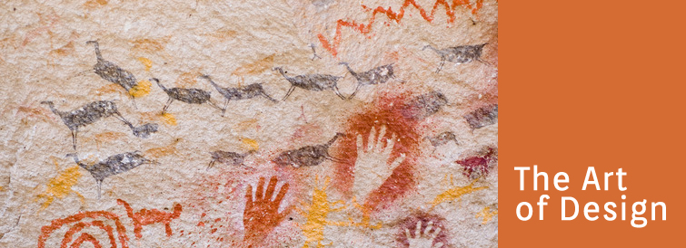

Articles

The Art of Design
Art has been used since the beginning of time as a tool of communication. Our primitive ancestors painted on cave walls to illustrate their understanding of the world. It was a way of recording ritual and belief, and to identify as a people. Moreover, art has played a key role in how we understand the history and culture of a people.
Fast forward to more recent times. Long since are the days of illustrating the ritual of hunting a horned beast. We now predominantly use art to decorate our lives, and sell our products. Does that sound sad? Maybe. However, taking a look at what design means to the designer may surprise you. Just for fun, we'll give you a short peek into the world of a designer.
As designers we live and breathe design - all day, everyday. Designers are always on the chase for inspiration, whether it's found in some old cave painting, some peeling typography on the side of building or some great color scheme we see passing a marsh in the fall. Inspiration is shared with our contemporaries online using venues like Dribbble, creating a sense of community among designers. The common thread of using art as communication has been carried throughout history to present day, it's just evolved with the times. We're artists using a different medium. Our culture is just buzzing on different ideas, and communicating them in a different
arena.Our attempt is to provide a more in depth understanding and appreciation of how a designer communicates your ideas effectively by using the basic fundamentals of art, just as our ancestors did. We could write a whole book about this topic and maybe we will someday, but for now you can expect that you'll be seeing more about the art of design in future blog articles.
© 2018 Chris Gillis Design All Rights Reserved.